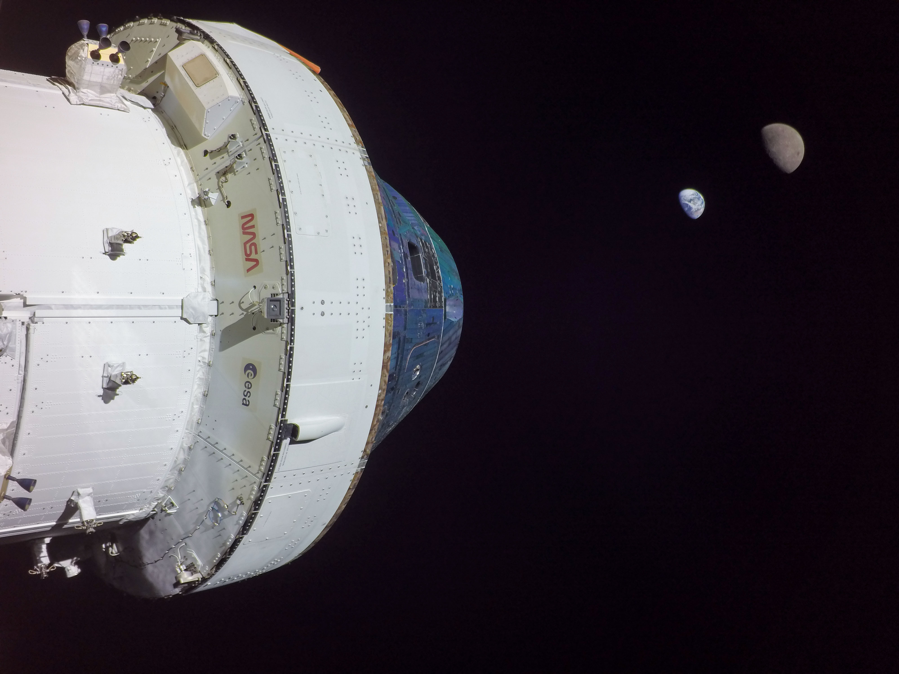
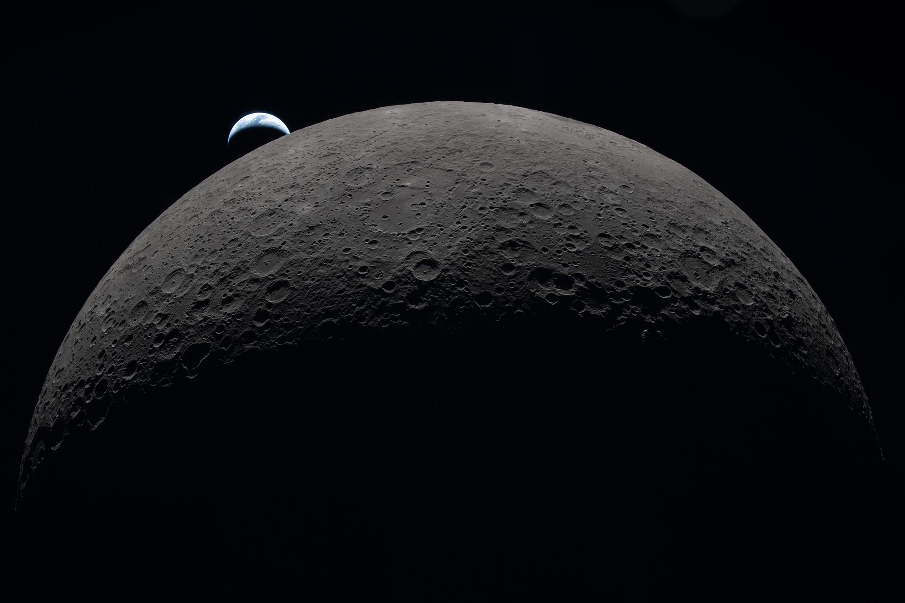

What is the Artemis Program?
The Artemis program is a program created by NASA with the goal of returning humans to the Moon for the first time since 1972.
Artemis I
Artemis I was the first mission in the Artemis program. The goal of the mission was to test the Orion spacecraft and the Space Launch System (SLS) rocket. It launched on November 16, 2022 and performed a flyby of the Moon. The mission completed when the Orion spacecraft splashed down in the Pacific Ocean on December 11, 2022.

Artemis II
Artemis II was the second mission in the Artemis program. The goal of the mission was to validate life-support systems, crew operations, and mission procedures. It launched on April 1, 2026 and performed a free-return flyby of the Moon. The crew of this mission was Victor Glover, Christina Koch, Jeremy Hansen, and Reid Wiseman. The crew of this mission also became the farthest humans to ever travel from Earth and the first to visit the Moon since the Apollo program in 1972. The crew returned to Earth safely on April 10th, 2026.

Artemis III
Artemis III is the third planned mission in the Artemis program. The goal of the mission is to test rendezvous and docking procedures in low Earth orbit with one of both of the commericial landers from SpaceX or Blue Origin. The mission is scheduled to take place no earlier than 2027. The crew for this mission has not been announced yet.
Artemis IV
Artemis IV is the fourth planned mission in the Artemis program. The goal of the mission is the land humans on the Moon for the first time since 1972. Two crew members will land on the South Pole of the Moon and stay for around a week before going home. The mission is currently planned for no earlier than 2028.